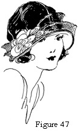
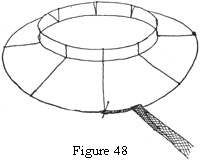
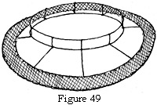
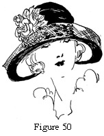
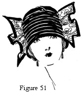
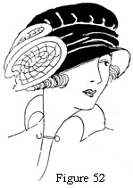

1925—Millinery
by Jane Loewen
CHAPTER IX—TRANSPARENT HATS
Very few wire crowns are used in any hats today because of their discomfort and stiffness. Fabric crowns or soft pressed crowns are more comfortable and much prettier.
There are, among the new styles, many semitransparent hats—that is, hats with lace- or maline-extended soft edges (see illustration, Figure 50). The processes involved in making these are not different from the processes of making the ordinary fabric and straw hats. It means only that a fold of maline or a ruffle of lace is added before the facing is put in. The directions given for maline hats apply as well to net or all-over-lace hats.
I. KINDS
Hair-braid transparent hats are not discussed here, since the preparation is the same as for lace hats and the method of sewing the same as for any braid hats.
MALINE
A waterproof maline of closely woven quality is always the best choice, as it wears better, looks much better, and is easier to work with. A coarse maline costs less per yard, but so many more thicknesses of the coarse quality are required than of the fine that the difference in yardage makes the cost practically the same.
Maline is so porous a net, being merely a very fine net with a large amount of sizing or starch, that it is never necessary to cut it on the bias.
1. With brims fitted over wire frames. (See section II of this chapter for frame preparation.)
All maline. Maline is fitted over a wire frame in much the same manner as any fabric is fitted over a pressed frame, with a few exceptions.
Fullness in the fitting of an extreme shape with decided curves may be steamed out by holding the hat over steam and stretching out the fullness while the material is damp.
Care must be used in slashing the material at the headsize. If it is cut too deeply, the slash spreads. The better method is always to cut down about half as far as seems necessary. It is always an easy matter to cut farther and difficult to repair a slash cut too deeply. If you have made the mistake of slashing too deep, slip a small piece, 1½ inches wide by 2 inches long, in between the layers of maline at the slash. Do not sew this slipped-in section any place except at the base of the headsize. The facings of maline will hold it in place.
A fine silk wire (French wire) or heavy satin cable wire makes a nicer facing edge or flange finish than brace wire. Cotton wire should never be used for maline hats in any way.
Maline and straw. Maline crowns and extended flange edges may be used with straw brims.
Entire maline hats may be combined with fine straw, as milan, hemp, or visca stripping, sewn over the material in rows ½ inch or more apart.
Other maline fitted hats are covered entirely with a conventional floral design or an angle design of any fine straw tubing or stripping. In these hats the top brim facing of maline is fitted over the wire frame, the crown made and sewn on, and the entire braid design embroidered before the under facing is put in. It serves as a finish to hide the braiding stitches. Matching silk thread is always used. In most cases the stitches may be partially hidden in the braid.
Strips of wide braid, about ½ inch, are sometimes sewn over fitted maline brims from edge to headsize in a stripe effect. The edge may then be finished with a braid or maline fold or a braid fold plus an extended maline edge.
Maline and velvet. Satin or taffeta are often used in the same relative manner as velvet. Many of the better winter dress hats are always made of maline and velvet. The combination makes a perfect background for paradise, ostrich, goura, aigrettes, and handmade flowers. The lustre of velvet and the duller finish of maline make a rich contrast.
Maline brims may have velvet crowns and velvet fitted flanges or bias extended folds. Fitted flanges put on in a design of scallops, squares, or points make handsome finishes and are the last word in needlework accomplishment.
Maline and lace. Maline and lace in combination make a satisfactory dress hat for summer and one which may be used for evening wear all the year round.
All black lace hats need maline for brim facings and crown linings.
Black lace and maline hats are charming when trimmed with large velvet bows or with bands and bows of wide, colored velvet ribbon, as Copenhagen blue or begonia shades. Wreaths of field flowers, primroses, corn flowers, heather, or mixed flowers make a black lace and maline hat into a most satisfactory garden hat.
2. With steamed crowns. With steamed crowns a shaped maline crown is made by stretching and steaming maline over a wooden crown mold. This eliminates pleats and shirrings and gives the crown shape without fullness. In stretching the maline, thumb tacks are used to fasten the maline to the wooden block. The maline, usually four to six thicknesses the required size, is pulled over the crown and a tack pushed in at the front, back, and sides at the base of the crown. One corner at a time, the material is steamed over a teakettle or steaming equipment, the fullness stretched out, and the maline caught to the block by more thumb tacks at intervals of not more than one inch. The maline must be allowed to dry thoroughly before removing it from the block. Then the lower edge is trimmed evenly and the crown mounted on a narrow, silk-covered crown band. A drape of flat maline folds may be used for the finish. The headsize band varies from one to two inches with the height and style of the crown.
3. Solid crowns with transparent maline brims. These crowns may have fitted maline brims, as described in section 1 of this chapter, or they may have brims of pleated, shirred, or corded maline.
Velvet crowns. Velvet crowns of any desired style that harmonizes with the shape of the brim may be used for a maline hat. Cap crowns, section tams, fitted tams, and saddle crowns are the styles generally used. A maline hat is ordinarily a dress hat, and the above-mentioned crowns, being soft, are more appropriate.
Fabric crowns. Taffeta, faille, satin, georgette, crêpe de chine, and moire are most satisfactory fabrics to use for crowns on maline hats. Cap crowns, section and fitted tams, saddle crowns, and soft, corded, four-section crowns are the styles most used.
Flower crowns. Flower crowns on maline brims make lovely and colorful dress hats. Flat roses, rose petals, colored rose, or ivy foliage, and flat, small flowers make the most satisfactory crowns. Care must always be used not to select flowers of knobby or cup-like shape, as they will make the crown too heavy. A tied bow of velvet or ribbon is often added as a finish to this type of hat.
Straw crowns. Of the wide braids for hand sewing, fancy hair braids, elaborate visca-and-hair-combination braids, celophane, or satin straw are most suitable for crowns on maline brims. These are usually sewn in a soft semidraped form. They may be sewn in the hand or shaped over a wooden or buckram mold. Ordinarily only a low headsize of 1½ or 2 inches is used for the foundation. The braid may be sewn in shape over a pressed crown, without stitching through the crown, and sewn to the brim. The top of the crown may then be cut out just before the hat is lined, leaving only a headsize band. A razor blade or sharp shears may be used for this. A smooth rather than jagged cut must be made so that the straw is not roughened.
Sewed crowns of milan, lisère, China split, milan hemp, and fine visca stripping are used for the maline hat in midsummer.
LACE
Lace transparent hats on wire frames are ordinarily made by putting the design or scallop edge on plain at the brim edge of the frame, extending the lace the width of its scallops or points and pulling the fullness up to the headsize in smooth fine pleats. The lace is more easily handled and the hat stays in shape longer if the frame is first covered with one thickness of maline. The crowns for lace hats are usually ordinary cap or puffed caps of lace with a silk or maline interlining.
1. Metal lace. Metal lace is used for transparent hats in either of two ways—as described in the paragraph preceding, or as all-over lace is used. (See page 106 of this chapter.)
The edge wire is often wound with velvet bias folds or narrow ribbon to match the crown or trimming in color.
2. Valenciennes lace. Val. lace is used in écru or pastel shades for children's transparent hats and in black for adults' hats. In both cases, the wire frame is first covered with maline or fine net. The lace is shirred or pleated and sewed to this foundation in ruffled rows.
The crown may be all-over lace, maline, organdie, velvet, or silk fabric. Val. lace is always more effective in écru or in pastel shades than in white. (See Chapter XIII, section I.)
3. Lace flouncing. Ordinary lace flouncing of three to five inches in width is used as directed in the beginning paragraph under Lace.
It may be pleated in a fine No. 1 or No. 2 knife-pleating and sewed with the pleats stretched at the edge wire and crowded in close together, but flat at the headsize.
A wide flouncing may be pleated or shirred so that the one strip forms the entire brim and crown.
If pleated, the fullness is laid in closer pleat arrangement at the headsize.
In a shirred model, the shirring threads adjust the fullness to shape the crown. The crown may be shaped in this way over a pressed crown, or it may be shaped into a tam by using a group of shirrings at the top-crown center and one at the headsize.
If the lace scallop is used for the brim edge, it is necessary to work from the edge up to the crown center to adjust the lace to the frame irregularity of shape.
If a binding or flange is used for the edge, it is possible to work from the center-top crown down to the edge. Never try to gather all the fullness into the center-crown shirring in a small circle. Pull up this shirring to about two inches and sew the lace together in a folded, one-inch oval on this shirring.
4. All-over lace. All-over lace may be combined with other materials and fitted exactly as maline is fitted over a wire frame, or it may be treated as lace flouncing (see division 3).
LACE AND FABRIC COMBINATIONS
There are more lace hats made in combination with fabric than there are all-lace hats. The fabrics used and the methods of using them are the same as for maline hats. Milan-straw side crowns bound with silk are frequently used for summer lace hats. The top crown is lace over silk. The brim may be of maline with a drop over it made by extending lace flouncing beyond the frame edge.
GEORGETTE
Georgette is sometimes finely corded or shirred and used over a wire frame. It is seldom fitted plain unless fine straw or silk braid is used in an embroidery or braiding design over it.
II. PREPARING THE FRAME
Wire frames are used for transparent hats. For making see Chapter I.
WINDING WITH MALINE FOR BLACK AND WHITE HATS
Figure 48. Winding a Wire Frame with Maline.
For maline and lace hats, a matching color of wire is used and the edge wire wound with maline. This makes a nicer edge finish and gives a foundation on which to sew the lace.
In making a fitted maline hat or a hat of lace flouncing, brace wires show less and a smoother finish is obtained if they are not wrapped.
When making a fitted georgette or all-over lace hat, it is better to wind the brace wires. Only one thickness of lace and one of maline is used and only two thicknesses of georgette are used. Brace wires are less conspicuous when wound with fabric.
Cut a long, narrow strip of maline two inches wide. Fold it to three quarters of an inch. Pin one end to the edge (with the folded edge out) at a brace-wire intersection to keep the maline from slipping. Wrap the maline very tightly and smoothly around the edge wire, allowing the maline fold to lap only enough to cover its own raw edge.
When the wrapping is lapped too much it makes a thick, bulky edge. The edge wire must be covered, but must look thin and smooth. The maline strip may be pieced by fastening one edge with an overcasting stitch and starting another with the same stitch. All stitches must be hidden.
DYEING TO MATCH METAL OR COLORED LACE
Gasoline and oil paint may be used to dye any white silk wire any desired shade. The wire can be more easily handled before it is made into a frame than afterward. Yellow wire for use with gold-metal lace, and light gray for silver-metal lace, are not bad substitutes for metal paint.
METALLIZING FOR METAL-LACE HATS
When using metal (gold or silver) lace the frame should match the lace in shade.
There are millinery preparations for the purpose which may be used on black or white wire.
The ordinary gold and silver paint used for steam radiators and picture frames may be purchased at any paint or wall-paper store. The frame should be made before the paint is applied. Apply this to the frame with a small brush. Black wire for a frame that is to be antique gold or silver, and white wire for a frame that is to be bright gold or silver, give best results.
III. EDGE FINISHES
In any hat, the edge finish is an important item. In a transparent hat there are two important points to be kept in mind: (1) neatness of finish, (2) softness of line.
BRAID EDGES
On summer hats of maline, lace, and hair braid, a single row of plain, Swiss hair braid is often extended to give the effect of a maline fold.
Other hats use braid as a binding. Hair braid may form a binding but extend beyond the edge wire in a fold. Fancy celophane braids and fine milan braids are often used as edge finishes. When a wide braid is used, one row only is necessary and is used as a binding. Narrow braids have one row at the top brim and one at the facing edge. The edge wire of the frame wound with maline serves as a foundation to which the braid is sewn and shows between the two braids. This makes a thinner and more finished edge.
When a soft braid, as visca or satin straw, is used with maline, lace, or hair braid, it is often sewn to the frame edge (after the brim is covered) with embroidery thread in long stitches. This makes a soft finish.
Narrow braids may be sewn to the edge of a transparent hat to form a loop-fringe effect. The loops vary from ½ inch (1 inch before looping) to 1 inch. The ends of each loop are cut. Several rows of the braid may be stitched together and used for a finish of loops over the edge of the brim. Visca, hemp, or milan stripping in the straw braids, soutache, ribbonzene, and chenille in the silk braids are good for this edge.
RIBBON EDGES
Ribbon may be used very simply or very elaborately on the edge of transparent hats. It may form a simple binding stitched on with ribbonzene or silk floss.
It may be pleated or shirred and sewn in a design. It may be pleated and tied in a ruching and one row used at each facing edge (see Figure 73).
Hat patterns usually give directions for each hat.
A very good way to get new effects is to experiment with a buckram frame and a bolt of No. 3 or No. 5 ribbon. Fold the ribbon back and forth in irregular loops, or in points and squares until a satisfactory design is obtained. Then copy it on your hat.
Dovetail pleating makes nice edge effects on small, transparent hats.
FLANGES
Looking up the definition of flange in the dictionary will give any millinery student a good idea of what it means in millinery terminology and place it in her mind.
Do not confuse fold with flange. A fold on a brim edge either extends out from or over the edge wire on both sides, folds over, and is always double—a fold.
A hat may have a facing flange and a top-brim flange, but there is an edge division or cord or binding. It does not fold over the edge.
1. Velvet. Velvet is more used for flanges on transparent hats than any other material. It may be worn for winter and is invariably popular in summer.
Figure 49. Flange Foundation for a Transparent Hat.
Flange foundation. A lightweight frame fabric under a flange keeps the frame-brace wires from showing through. A sprung-steel wire is used for the frame edge wire when a flange is to be used. A round brace wire should be tied on to the straight brace wires to make the desired flange width. Cut a circle (or fit a circular section) of crinoline, elastic net, or rice net, and buttonhole or blanket stitch it to the steel edge wire. Cut the net or crinoline on the inner brace wire and buttonhole it to the wire.
Process of putting on a flange. This same foundation may be used for a fold. Bind both wires with a one-inch bias strip of crinoline or mull binding. Put on the inner brim, which may be maline, lace, hair braid, georgette, net, or chiffon, and may be fitted, shirred, or corded. Sew the material to the inner flange edge and headsize before putting on the flange.
If the flange is one or one and one-half inches wide, a bias may be used to cover it. For a wider flange, a fitted section (cut as a brim is cut, but with the center cut out) is better to cover it.
Fit the flange whether bias or circular. Join the seams if a bias is used.
In fitting the bias, always bear in mind that the same bias length that fits the brim edge must lie smoothly on the inner flange edge. The tighter the material is stretched on the brim edge, the less fullness there will be to work out at the inner edge of the flange. Technically speaking, the smaller the fabric circumference can be made for the outer flange edge, the nearer it will equal the circumference of the inner flange edge. The bias is stretched over the large circumference and fullness pulled out at the smaller. (See Chapter VI, section IV, for flange measurements.)
Pin the material (bias or fitted) in place over the frame flange. Turn the outer edge over the frame edge and sew down as for any fitted brim. Work the inner edge over a wire for a finish or turn under a quarter-inch seam to be slip-stitched to the flange facing.
Fit the facing of the flange in the same way as the top. Finish both the outer and inner edges with a wire or with a slip-stitch.
2. Taffeta. Taffeta flanges are used on maline brims with maline crowns and with taffeta or flower crowns—also with lace and georgette brims and taffeta or flower crowns.
Figure 50. Maline Standing Fold and Velvet Flange on Hat of Taffeta.
3. Maline. Maline flanges are used on all-over-lace brims, on shirred-lace brims, on fitted maline brims, and on hair-braid brims. They may be made over a silk foundation, or be transparent. When maline is used over silk, one thickness of silk is put on the frame first. Two or three thicknesses of maline are then cut and stretched over the silk flange. Ordinarily maline for a flange is cut on the straight, lengthwise. It may, however, be fitted without a seam.
For a transparent maline flange, the frame is prepared with a round brace to mark the flange width. Both brace and edge wire are first wound in maline. The edge wire should be of sprung steel as for fabric.
Satin cable wire makes a nicer wire finish for maline than brace wire. The joining must be carefully made. Fit the wire to exactly the same size as the frame wire. Clip the ends evenly. Unwind the silk-wire wrapping, but do not cut it. Push back the cotton filler. Put on and clamp the joiner tight. Pull the cotton over it and rewind the silk. When the flange is finished the wire joining will not show.
IV. APPROPRIATE TRIMMINGS
LACE BOWS
Lace bows (and maline bows) are always attractive and becoming because they add two important things to a hat: (1) irregular width, (2) diffused lighting on the face. Any trimming which throws a heavy shadow on the face is ugly. Always select a fine, lightweight lace with a distinct design.
All-over lace or lace flouncing may be used. Single thicknesses, not loops, are best. Wire the edge of the bow with lace wire or a narrow ribbon wire. Cover the edge with a silk or maline fold slip-stitched over the wire or bind it with ribbon. Make a knot of the same material as the binding. Lace 12 × 10 inches with a shirring down the center makes a nicely proportioned bow. This gives two loops six inches long and ten inches wide. Bend the outer wired edge of the loops into pleats so that the loop does not flare too much. A bow this size may be used on small- or medium-brim hats and be posed at the back or front. Four loops may be used in place of two. (See Figure 51.)
Figure 51. Wired Lace Bow.
Dimensions are usually given with each hat pattern.
VELVET
Velvet is used on lace, maline, and metal hats. It is used in bands, bows, flowers, and rosettes.
On metal hats the velvet is often lined with metal cloth. For example, a silver-lace hat will have an Alsatian bow of French blue velvet lined in silver or blue metal cloth.
Black maline and lace hats for midsummer often have black velvet bows as trimming. These bows may be lined or have only inch-wide pasted hems for finish.
For this trimming a six-inch, bias, velvet strip (two widths of velvet) fifty inches long is pulled or draped around a crown and tied in a bow at the front or back or side. This is a trimming which is always conservative and satisfactory.
FLOWERS
Single roses, rose sprays, flower cabochons or rosettes, or wreaths of mixed flowers are the favorite flower trimming on transparent hats.
1. Silk. Silk flowers, such as beauty roses, rosebuds, violets, dahlias, and raisins are the main flowers under this heading. There are many silk fruits and unknown conventional flowers that are pretty on transparent hats.
2. Linen. The great majority of better flowers are of linen. Cowslips, forget-me-nots, grasses, wheats, fruits, heather, sweet peas, lilies, etc., come under this classification. These are most effective for formal, flat, cabochon arrangements and for mixed wreath sprays.
3. Metal. Metal flowers as related to transparent hats are, of course, used mainly on metal lace. Many of these flowers are mixed with silk and, though factory-made, give the effect of handmade flowers.
Grapes, apples, plums, and flat-petal flowers furnish most of the designs for metal flowers.
4. Velvet. Many of the better flowers in rose, pansy, nasturtium, fuchsia, and fruit designs are of velvet. These are expensive but of such exquisite coloring and fabric that they are well worth the expenditure.
5. Handmade. Handmade flowers are very satisfactory for many reasons. They furnish the most beautiful trimming, yet anyone who will take the trouble can make them at a small outlay for material. Colors may always be blended to give the desired color scheme. The really finished handmade flower is never common. Beautiful workmanship is the one thing that cheap manufacturers do not copy.
Georgette. Georgette is a good material for handmade flowers because it comes in attractive shades, has a soft finish, and is lightweight.
a. Over wire form. Twist three different-sized loops of tie wire, 2 inches for the smallest, 2¾ inches for the medium, and 3½ inches for the largest. This means, take a length of tie wire and twist the ends together to form a loop.
Hold the wire loop in the left hand and pull georgette over the loop to cover it. Sew the georgette to the ends of the wire and cut off the fullness below the stitches. Make 4 small petals or loops, 6 medium, and 8 large ones. Assemble them into a daisy shape. Finish the center with a shirred puff of georgette.
Mount three small petals, one at the end and one on either side, evenly spaced, on a 3-inch cord and wind the cord with a georgette fold for stem and leaves.
Georgette, like silk, may be used for many other handmade flowers.
b. Shirred. One of the most attractive handmade trimmings is the georgette morning-glory shaped by shirring. A 10 X 4-inch strip of georgette is joined in a circle by seaming the 4-inch ends together. One end is shirred over a 7-inch circle of silk-covered cord (filled cord covered with crêpe or taffeta matching the georgette in color) or silk-covered ribbon wire. Starting just below this edge cording run silk shirrings ¼ inch apart. Pull up the thread while shirring to shape the georgette like a morning-glory. The fullness is pulled tighter until at the end the shirrings will be not more than |-inch in circumference. Mount the morning-glories on self-colored or green stems and leaves (see Figure 52).
Velvet. Velvet is used more in combination with other fabrics than in any other way. Pasted velvet flowers form the great exception.
a. Pasted. In making pasted flowers, paste large pieces of material together. Allow the cement or glue to dry thoroughly before cutting, so that the edges will not fray.
Lilies (calla and tiger lilies), roses, pansies, and poppies are best adapted for this usage. Patterns are always furnished for the flowers with the hat patterns. Any . clever girl can cut her own pattern from the actual flower or a drawing. Sharp scissors and a good quality of velvet are the main requisites in making these flowers.
b. Shirred. Shirred velvet is always prettier in colors than in black. Flat, oval, shirred-velvet flowers with cordings of contrasting color make rich trimmings when many shades are blended together.
For this, use velvet on the straight. Run fine shirrings ¼ inch apart. Pull up the first tightly to close the center. Sew the raw edges together in a flat seam on the wrong side. Pull up the shirrings until the flower cups very slightly. Cord or bind the edge in a contrasting color, using a bias strip.
The following are good proportions.
Strips 1½ inches × 6 inches.
Strips 2 inches × 7½ inches.
Strips 2½ inches × 10 inches. Strips 3 inches × 11 inches.
c. Corded. One-inch bias strips of velvet may be corded on one edge with a draw string on the other, and the draw string pulled up to make the edge curve. Sew the shirred strip into a flat flower. Curve the end under in the same way that you start a braid crown center. These strips may be from six to ten inches long.
If the velvet is faced with a matching or contrasting color of silk, it may be curved into a conventional rose. Always curve the end down so that the cord starts from the center.
Silk. Many lovely handmade flowers are constructed from silk. The quality and shade of the silk used has a great deal to do with the success of the flower. The three important items are color, quality, and workmanship.
a. Pasted. Heavy silk is always necessary for this process. In pasting two thicknesses of fabric together, apply the millinery glue or cement lightly to each of the two surfaces. Then place them together and smooth out all wrinkles and air bubbles. Let the glue dry thoroughly before cutting the silk. Always paste the silk in the piece before cutting the flower (see Velvet Flowers, Pasted, in this chapter).
b. Shirred. Shirred-silk flowers have a wide variety of forms, from large roses and almost rosette-size stuffed flowers in vivid shades to small berries and forget-me-nots.
Shirrings help form the shades of many of these flowers.
Patterns and directions for making the flowers are always given with the hat patterns.
Shirred flowers are made from circles shirred and puffed, from shirred folds, from fringed strips shirred into various shapes, from two shades of silk cut in ovals and shirred and mounted on buckram foundations, and in a large variety of other ways.
c. Corded. Conventional morning-glories, trumpet flowers, and tulips are made from corded silk. One of the most effective of the large handmade roses is made of many petals of bias silk.
The bias strips have a tiny wire stitched inside a casing on one edge. The strip is cut into two- and three-inch lengths for the petals. The uncorded edge and the cut ends of the bias strip are shirred tightly to make the base of the petal. The stitching of the wired casing is entirely concealed by the roll. The petals are arranged in a rose shape and finished with a puffed center.
ROSETTES
The idea of rosettes is centuries old, yet always there are new versions of it.
1. Maline. Maline rosettes may be shirred, looped, or pleated. Shirr a fold of maline 20 inches by 5 inches (20 × 10 before folding) over a 10-inch circle of silk-covered ribbon wire. Lap the ends 1 inch. Run shirrings below the ribbon wire at ½-inch intervals. Pull up the threads to shape the rosette. Sew the base of two such rosettes together. Pose them at the side or side back of a small-brim hat. The effect is pleasing because it gives irregular line, transparency, and an air of the unusual.
An effective maline rosette is made from the full width of maline tied with tie wire in loops over 2-inch flat lengths of frame wire. The loops are crushed close together, about 8 loops 2 inches long (4 inches doubled) without cutting the length. A long piece of tie wire binds the loops of maline close to the wire foundation. One maline loop is folded below the other as close as possible and held in place by a tight wrapping of tie wire. When complete, the maline is clipped all over to give a round, ball-like rosette. Two of these maline balls are posed at the side or front of a brim hat.
Pleatings of maline may be of double folds or of single maline with narrow braid or ribbon stitched on the edge. Side- (or knife-) pleating, box-pleating, and dove-tail pleating are made in long strips and mounted on circular or oval foundations of rice net or crinoline. These foundations should be covered with silk the same shade as the maline used.
2. Ribbon. Ribbon may be made into many, many different kinds of rosettes.
Narrow-ribbon loops, narrow-ribbon pleatings, points, and ruchings make tailored and semitailored rosettes.
Wide ribbons shirred, folded, and pleated form many different kinds of rosettes.
Two-inch loops of wide ribbon folded in a horizontal pleat and sewed in two rows around a 2-inch foundation form an effective and simple rosette The center is finished with a flat double bow (four loops) and a wide knot.
For No. 100 to No. 150 ribbon the two ends should be joined in a circle and a group of shirrings ½ inch apart run in one edge. These shirrings pulled up form the rosette center. The first shirring should be pulled up to 2 inches and folded flat and sewed in a 1-inch seam to make an oval center. The ribbon length varies from 16 to 24 inches for this kind of rosette.
The directions are always given on the hat pattern for all rosette trimmings.
3. Taffeta. Taffeta may be cut into petals and mounted in a rose-shaped rosette. Two shades of silk for this make an effective rosette. Black and jade, blush pink and rose, Copenhagen and navy, brown and leather are good combinations.
Taffeta may be made into shirred rosettes like the ribbon rosettes described above. It may be corded and the cords pulled to shape the rosette. Hat patterns always give complete directions.
4. Velvet. Velvet rosettes may be made of a bias corner with shirrings and cordings, or from a plain bias shirred or corded, or from petals.
Many velvet bias rosettes are faced in silk or satin. The silk fabric may be a matching or contrasting shade. One rosette of satin soleil and one of velvet on a winter hat give good contrast of material.
Flower rosettes of velvet petals are very effective on a dress hat. These petals may be stitched and turned, or pasted and cut. . In either case they are mounted on a foundation.
FEATHERS
Only the softer kinds of feathers are appropriate for transparent hats. Burnt peacock, natural ostrich, burnt ostrich, paradise, goura, and aigrettes are the feathers most often used.
QUESTIONS
- Give directions for preparing
- A wire frame for a maline hat.
- A wire frame for a georgette fitted hat.
- A wire frame for a maline hat with a velvet flange.
- How is a wire frame prepared for a metal-lace hat?
- How are lace bows wired?
- Are wire crowns often used on transparent brims? Why?
- Make three kinds of handmade flowers in three different materials.
- Cut patterns and make three different kinds of rosettes from tissue paper or from material.